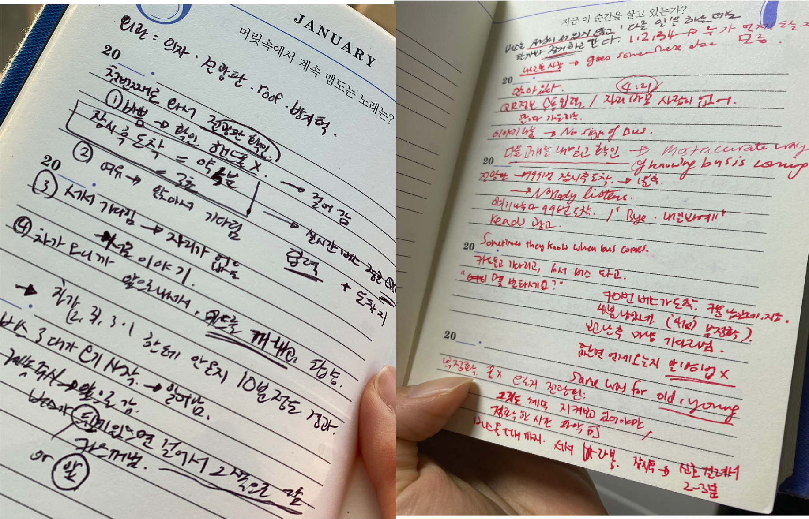
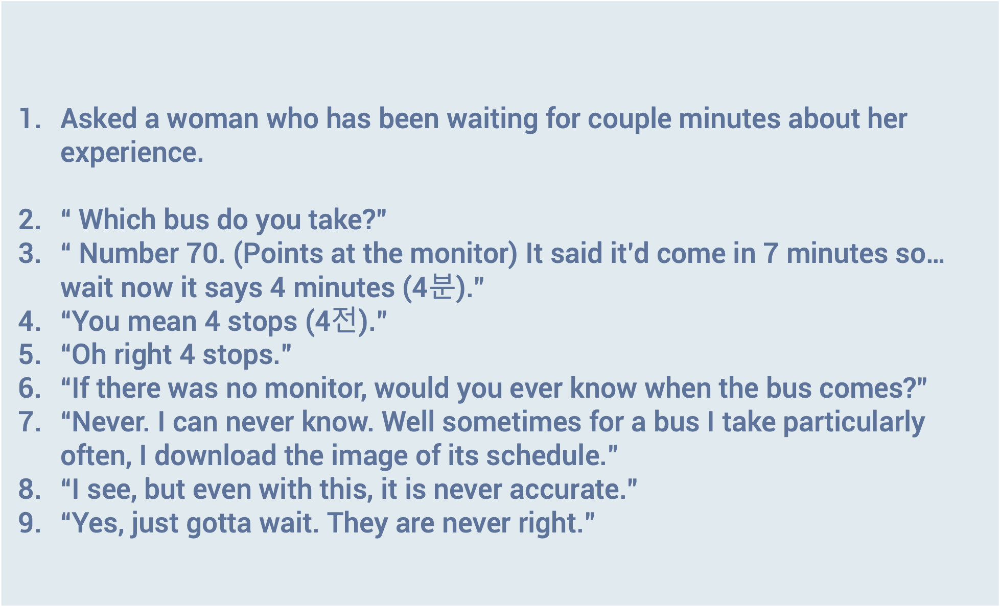

Re-visting a usual place can provide an entirely new perspective.
Out at the bus stop, I started to observe the area and tested usability.

Out at the bus stop, I started to observe the area and tested usability.

Using the field study user research method, I observed the arising interactions, space and environment based on the AIEOU framework.

An intensive session to think about its acitivites, environment, interactions, objects and users of a usual Place led to some vital but overlooked findings.
A field study at the bus stop
AEIOU framework, open-ended interview, field user experience research
While we wait for the bus, we don't even get to wander off with our phones. The bus is coming, and we have to hop on it. However, without having to look out for it constantly for the bus which we don't know when it will come, we have no choice but to be very alert. Some of the observations I made explicate such a trend and suggest a viable way to overcome it.
Observations → AEIOU Framework → Interview → User Research → Findings → Suggestion
Analyzing the behaviors, surroundings and objects of the space.
1. APPROACH → 2. CHECK THE MONITOR → 3. CHOOSE TO STAND OR SIT → 4. BUS APPROACHES → 5. STEP FORWARD → 6. TAKE OUT CARD → 7. HOP ON
Stayed at a bus stop (20202) in front of a middle school for 1.5 hours and observed the behaviors of people, actions they take, interactions they perform and their surroundings.
Every behavior, activity process and environmental characteristics

Noise attributes and interview insights
Time and sequence of activities
Interviewed with a passenger on her experience waiting for the bus
Takeaways from the observation
What can I do to improve usability and ease out the daily problems we face at the bus stop?
A bus monitor oriented bus stop, with full acknowledgement to the driver's need for the cues.